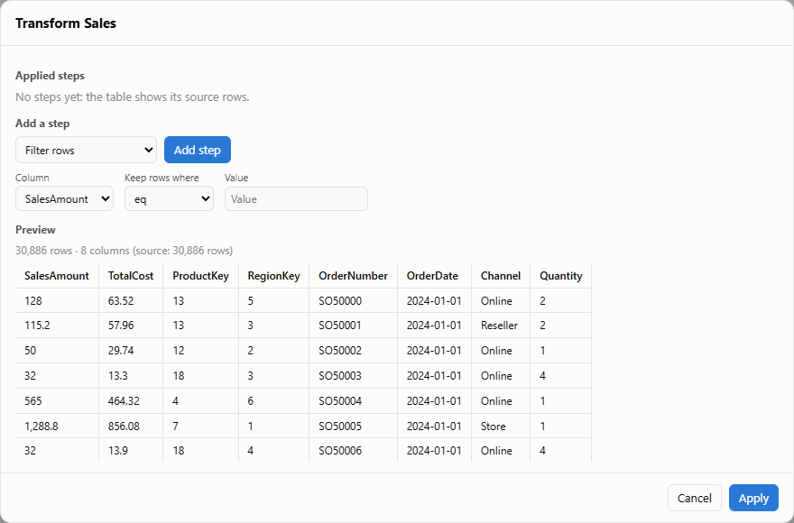

Transforms: clean and reshape data (Power Query-style)
Transform steps are plain objects applied in order to a table's rows. They're stored with the model, so they replay whenever the data is refreshed or appended to, and the same steps run in the browser, a Web Worker or on a server.
model.transformTable('Sales', [
{ op: 'removeDuplicates' },
{ op: 'transformText', columns: ['Customer'], fn: 'clean' },
{ op: 'changeType', column: 'Amount', type: 'number' }, // "1,200" → 1200, "n/a" → blank
{ op: 'filterRows', column: 'Region', test: 'notBlank' },
{ op: 'splitColumn', column: 'Order', delimiter: '-', into: ['Series', 'Number'] },
]);In the Studio, open the Data view and press Transform on a table. You can add steps from a form, reorder or remove them, and watch a live preview of the first rows. The steps are saved in the Studio document and undo like any other edit.
Steps #

| Step | Example |
|---|---|
filterRows | { op: 'filterRows', column: 'Amount', test: 'gt', value: 100 }. Tests: eq, neq, gt, gte, lt, lte, contains, notContains, startsWith, in, notIn, isBlank, notBlank |
removeColumns, keepColumns | { op: 'keepColumns', columns: ['Date', 'Amount'] } |
renameColumns | { op: 'renameColumns', names: { Cust: 'Customer' } } |
changeType | number (strips , $ € £ %), string, date (ISO dates become local dates), boolean |
replaceValues | { op: 'replaceValues', column: 'Region', find: null, replace: 'Unknown' } |
transformText | trim, clean (collapse spaces), upper, lower, title |
splitColumn, mergeColumns | split by a delimiter into named columns; merge with a separator |
addColumn | { op: 'addColumn', name: 'Label', template: '{First} {Last}' } |
fillDown | fill blanks with the value above |
unpivot, pivot | columns to attribute/value rows and back (pivot aggregates: sum, count, first, min, max, avg) |
groupBy | { op: 'groupBy', by: ['Region'], aggregations: [{ name: 'Orders', agg: 'count' }, { name: 'Units', column: 'Qty', agg: 'sum' }] } |
sort, removeDuplicates, keepTop | ordering, de-duplication (whole row or chosen columns), first N rows |
merge, append | join (left or inner) or stack another table of the model |
How replay works #
-
Source rows: the first
transformTablecall keeps the table's current rows, without calculated columns, as the source.transformTable(name, [])removes the steps and restores the source. -
Refresh:
refreshTable(name, rows)treatsrowsas the new source and replays the steps. Calculated columns are recomputed afterwards. -
Appends:
- When every step works row by row (filter, rename, type, text, split, merge, add, replace, unpivot, merge-join), only the new rows go through the steps.
- Whole-table steps (group, sort, pivot, fill down, remove duplicates, keep top, append) replay over the full source.
-
maxRowswindows the source.
-
Inspecting:
model.transformsOf(name)returns the steps, andmodel.sourceRowsOf(name)the source rows. The steps also appear inmodel.toJSON().transforms. -
Standalone use:
applySteps(rows, steps, { lookup })runs steps without a model, for example in a server job.describeStep(step)gives the plain-language label shown in the editor.
Try it #
▶ Run in playground
import { applySteps } from '@prismbi/prismbi';
return applySteps(
[
{ Customer: ' ana lopez ', Q1: 10, Q2: 12 },
{ Customer: 'ben ito', Q1: 5, Q2: null },
],
[
{ op: 'transformText', columns: ['Customer'], fn: 'clean' },
{ op: 'transformText', columns: ['Customer'], fn: 'title' },
{ op: 'unpivot', columns: ['Q1', 'Q2'], attribute: 'Quarter', value: 'Units' },
],
);On the docs site (npm run docs), ▶ Run in playground opens it in an editor next to its output.